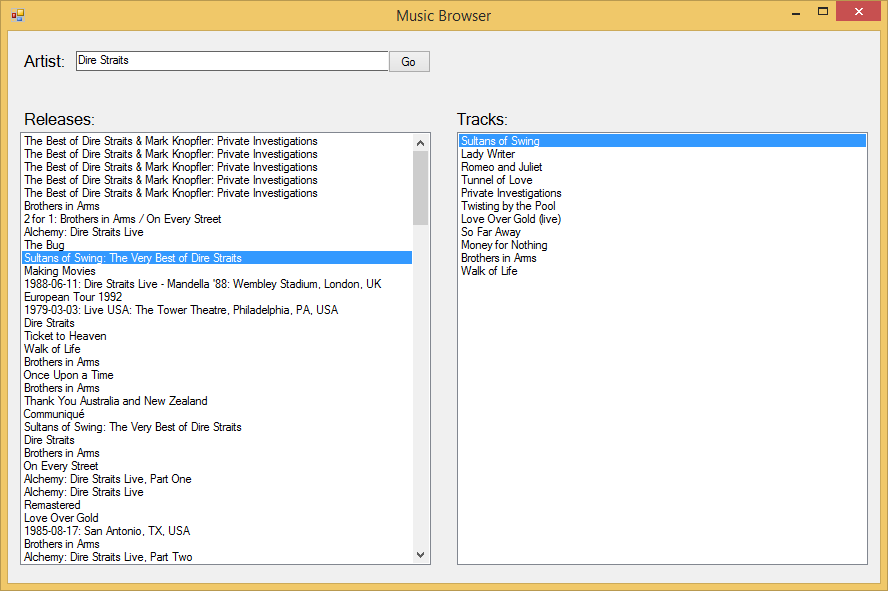
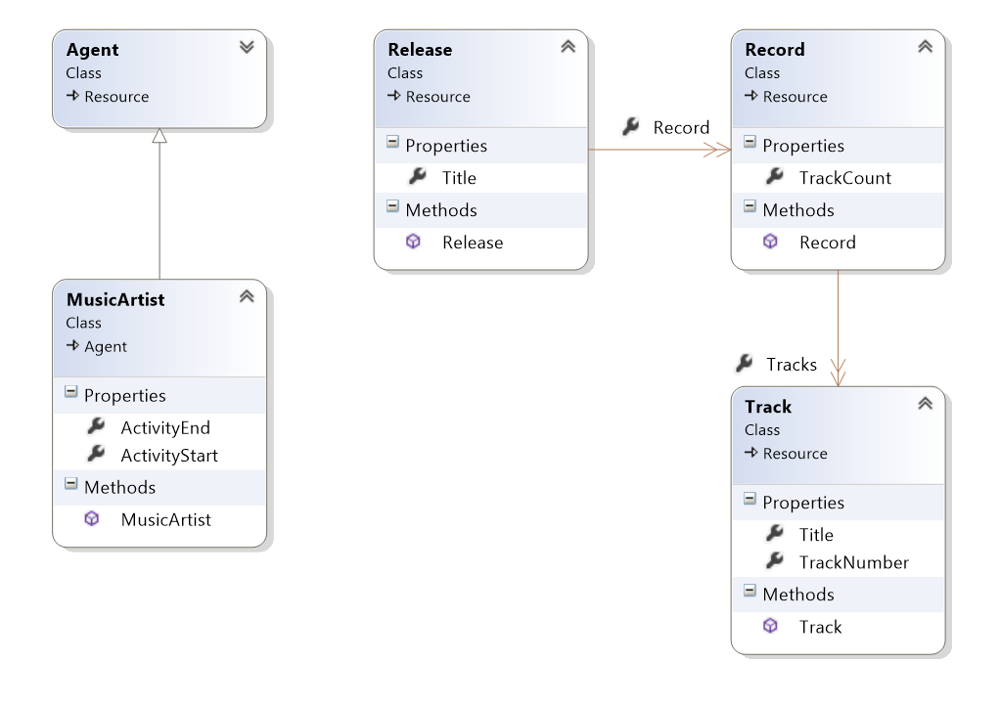

Music Browser
IMPORTANT: This example was written for an older version of Semiodesk.Trinity and might not be compatible with the current release.
This example shows you how to access the LinkedBrainz dataset with Trinity RDF. It uses Windows Forms as UI toolkit and utilises data binding.
Linkedbrainz seems to be offline. Before you try this example check the SPARQL endpoint at linkedbrainz.org!

Because of the way NuGet works, there is one step that needs to be completed for the example to work. Open the Nuget Package Manager console ('Tools' -> 'NuGet Package Manager' -> 'Package Manager Console') and enter the following:
PM> Install-Package Semiodesk.Trinity
Data Model
This example leverages the following ontologies for creating the data model:
For the object model we have created representations of artists and their created works: 
Note: As you can see, there is no connection between MusicArtist and Release. In
this example we have solved the latency problem by wrapping this request in a separate query.
SPARQL Endpoint
To query the SPARQL endpoint we need to create a store with the appropriate parameters:
IStore _store = StoreFactory.CreateSparqlEndpointStore(new Uri("http://linkedbrainz.org/sparql"));
IModel _model = _store.GetModel(new Uri("http://linkedbrainz.org/sparql"));
We use the SPARQL endpoint provider and configure the endpoint adress at http://linkedbrainz.org/sparql.
Data Binding
Though a bit rudimentary, data binding is possible in Windows Forms. We have created two ListBoxes
which are displaying the Title property of our objects. This can be done by setting the
DisplayMember
property of the ListBox.
We create a VirtualizingResourceCollection and set it to the DataSource property of the ListBox.
ResourceQuery artistEntity = new ResourceQuery(artist); // Artist is the concrete artist resource.
ResourceQuery madeEntity = new ResourceQuery(mo.Release);
artistEntity.Where(foaf.made, madeEntity);
albumListBox.DataSource = new VirtualizingResourceCollection<Release>(Model, madeEntity);
UI Responsiveness
We have used the async / await pattern to keep the UI responsive during querying. As threading is not an issue when using a SPARQL endpoint there is no need to worry about connection pooling.